One-time commonsense prior
Room preference, object scale, and confusable-object cues.
Commonsense as a Prior, Not an Online Controller
A room-prior-guided navigation framework for efficient, long-horizon object search.
TL;DR — ProNav tightly couples semantic room priors with geometry-aware topological planning, yielding a unified exploration strategy for efficient zero-shot object navigation.
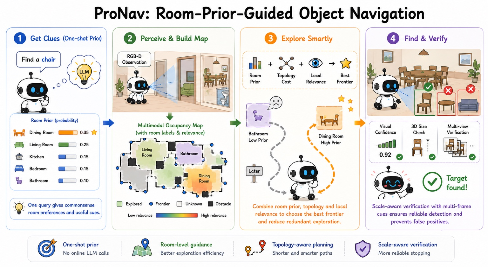
Finding unseen objects in unfamiliar environments remains a fundamental challenge for embodied agents. Existing zero-shot object navigation approaches either rely on costly online reasoning or suffer from inefficient exploration without high-level environmental priors. We introduce ProNav, a training-free room-aware framework that leverages room priors for efficient navigation. ProNav first obtains target-room knowledge and object-scale cues through a single pre-navigation query, then performs room-guided frontier exploration during navigation. A lightweight, scale-aware multi-frame verifier further improves reliability by confirming candidate detections and their expected scale across frames before termination. Extensive experiments on HM3D and MP3D demonstrate that ProNav achieves strong zero-shot navigation performance while reducing redundant exploration. Real-world experiments on robotic platforms further validate its practical effectiveness.
Semantic guidance meets path efficiency.
Commonsense as a prior,
not an online controller.
What to search: target-conditioned cues.
Where to search: room priors identify relevant rooms.
How to search: topology-aware costs favor efficient paths.
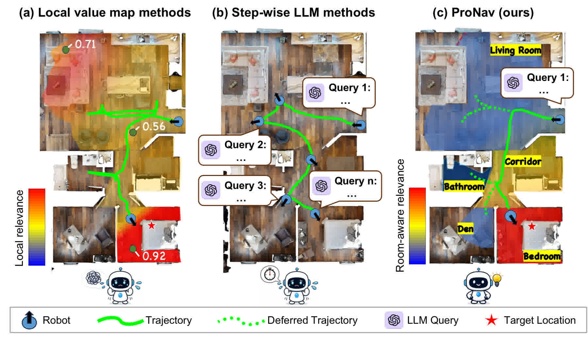
Smarter exploration. Faster paths. Accurate localization.

Room preference, object scale, and confusable-object cues.
Semantic maps let room priors guide frontier selection.
Topology-aware costs and adaptive granularity reduce detours.
Cross-frame confidence and size checks confirm the target.
Real-world trials are conducted on low-cost robotic platforms in an office building with interconnected hallways, bathrooms, computer rooms, and cluttered indoor spaces. Videos and figures below show both controlled ablations and multi-target cross-room navigation cases.
Two low-cost robotic platforms and an indoor scene showcase.


Multi-target trials, controlled ablations, and value-map overlays demonstrate cross-room navigation in cluttered indoor environments.
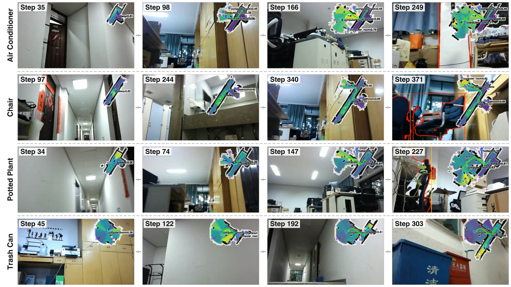
ProNav vs. target relevance only on real-world scenes.
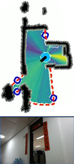
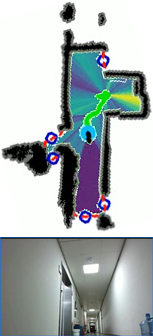
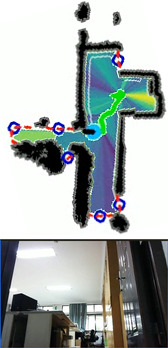
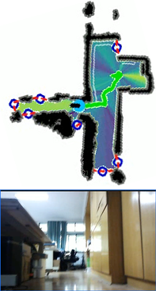
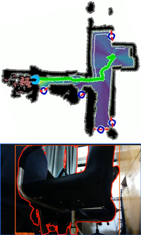
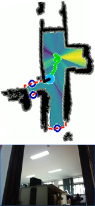
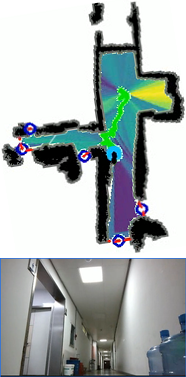
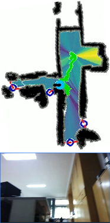
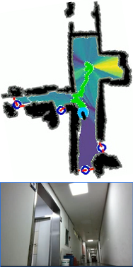
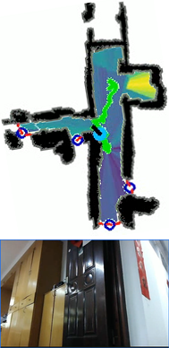
Controlled ablation comparison: ProNav uses room priors to reallocate exploration effort, while the target-relevance-only variant can revisit low-priority regions.
More experimental results, ablation comparisons, and performance analysis will be presented in detail in the paper.
Experiments are conducted in Habitat on HM3Dv1, HM3Dv2, and MP3D using the official ObjectNav success, SPL, and softSPL metrics.

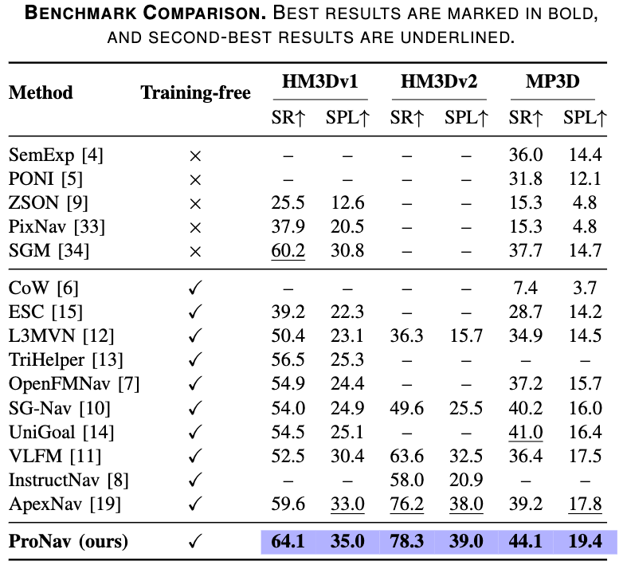
Target relevance only vs. ProNav on HM3D scenes.
Without topology-aware access cost vs. ProNav on HM3D scenes.
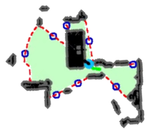
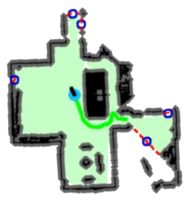
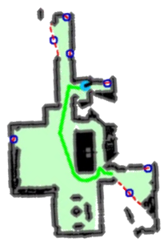
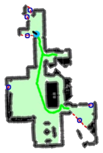
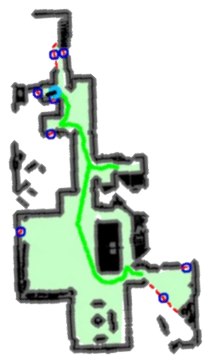
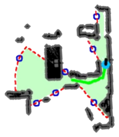
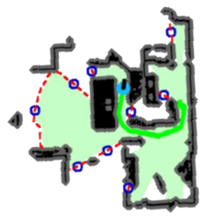
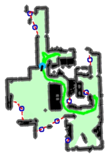
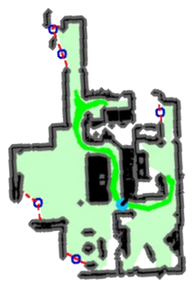
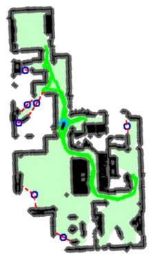
Trajectory snapshots are shown every few seconds. Hover over a panel to inspect it.
Without adaptive granularity vs. ProNav on HM3D scenes.
More experimental results, ablation comparisons, and performance analysis will be presented in detail in the paper.